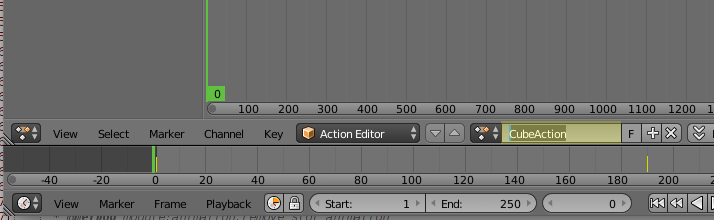
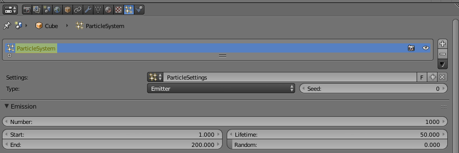

Визуальное программирование¶
Визуальное программирование (Logic Editor)¶
Осуществляется путем создания нодового дерева логики в окне нодового
редактора. С помощью Logic Editor можно существенно расширить функциональность
сцены, не прибегая при этом к программированию.

Для активации логики, на вкладке настроек сцены
Blender необходимо установить галочку Logic Editor и добавить/выбрать
активное нодовое дерево:
{kind=link}
Для редактирования дерева логики необходимо перейти в Редактор Нод
(Node Editor) выбрать тип нодового дерева Blend4Web logic:
{kind=link}
Затем выбрать дерево для редактирования:

Создание нод осуществляется привычным для Blender сочетанием клавиш
Shift+A.
Ноды - это логические блоки, выполнение которых начинается с
Entry Point, которая имеет один единственный выход. Почти все остальные
ноды помимо одного или двух выходов имеют также входы, таким образом они
могут быть вставлены в любое место в дереве. Ноды без выходов, например
Page Redirect, могут быть вставлены только в конец какой-либо ветви.
Ноды с двумя выходами позволяют ветвить алгоритм в зависимости от
успеха/провала указанного условия, например Conditional Jump.
Для реализации сложной логики предусмотрены числовые переменные, называемые регистрами. Каждый из 8 регистров может хранить в себе одно числовое значение. Регистры могут быть использованы для хранения какого-либо состояния сцены (например, это может быть счётчик проигрываемых анимаций, количество жизней, оставшихся у персонажа и т.д.).
Пример использования Logic Editor:

Ниже рассмотрены все возможные варианты нод.
Entry Point¶
Является точкой начала выполнения скрипта. Использование нескольких точек входа позволяет эмулировать многопоточное выполнение.
Play Timeline и Stop Timeline¶
Позволяют управлять NLA анимацией. Play Timeline проигрывать участок NLA,
начиная с кадра, на который указывает маркер.
Анимация воспроизводится до следующего маркера, либо до конца шкалы времени
сцены, после чего управление переходит к следующей ноде. Stop Timeline
останавливает воспроизведение.

Play Animation и Stop Animation¶
Позволяют управлять объектной анимацией.
Play Animation проигрывает объектную анимацию. Присутствует возможность
указать название анимации. Возможны 3 варианта:
Обычный Action:
{kind=link}
Шейдерный Action:

Система частиц:
{kind=link}
Stop Animation останавливает анимацию.
Select & Play Timeline (Deprecated)¶
Note
Устарел! Не рекомендуется использовать!
Взамен следует использовать комбинацию нод Switch Select и Play Timeline.
Ожидать, когда пользователь выберет объект (с помощью клика мышью в версии
движка для десктопа, либо нажатия на экране в мобильной версии). Если выбран
объект, указанный в параметрах ноды, начать играть анимацию аналогично ноде
Play Timeline, если же был выбран любой другой объект - немедленно передать управление
следующей ноде.
Select & Play Animation (Deprecated)¶
Note
Устарел! Не рекомендуется использовать!
Взамен следует использовать комбинацию нод Switch Select и Play Animation.
Ожидать, когда пользователь выберет объект (с помощью клика мышью в версии
движка для десктопа, либо нажатия на экране в мобильной версии). Если выбран
объект, указанный в параметрах ноды, начать играть анимацию аналогично ноде
Play Animation, если же был выбран любой другой объект - немедленно передать управление
следующей ноде.
Select (Deprecated)¶
Note
Устарел! Не рекомендуется использовать!
Взамен следует использовать ноду Switch Select
Аналогично ноде Select & Play, за исключением того, что вместо анимации
осуществляется переход. Указанная функция позволяет реализовать более сложную
логику, поскольку появляется возможность распознавания результата выбора
пользователя.
Conditional Jump¶
Перейти к указанной ноде в случае выполнения выбранного условия. В качестве параметров условия (операндов) могут выступать также регистры, которые активируются с помощью соответствующих переключателей.
Variable Store¶
Записать числовое значение в переменную.
Math Operation¶
Выполнить математическую операцию и сохранить результат в регистр. Любой из параметров (операндов) может быть либо числовым значением, либо регистром.
Show Object и Hide Object¶
Используются для скрытия и отображения объектов.
Page Redirect¶
Служит для перенаправления на другие веб-страницы.
Page Param¶
Позволяет сохранить произвольный параметр веб-страницы в выбранном числовом регистре.
Send Request¶
Позволяет отправить HTTP GET запрос на указанный URL и поместить значения полей ответа в переменные.
Inherit Material¶
Позволяет скопировать атрибуты одного материала на другой.
Set Shader Node Param¶
Позволяет установить значение шейдерной ноды. В данный момент поддерживаются ноды Value и RGB.
Delay¶
Позволяет установить задержку перед выполнением следующей ноды.
Apply Shape Key¶
Позволяет задать значение параметра Shape Key.
Outline¶
Позволяет управлять эффектом обводки объекта.
Move Camera¶
Позволяет перемещать камеру, в том числе с плавной интерполяцией положения.
Play Sound и Stop Sound¶
Позволяет воспроизводить/останавливать звук спикера.
Switch Select¶
Позволяет отследить событие выбора какого-либо объекта из списка объектов.
Отладка¶
Для отладки имеется возможность отключения (muting) нод. Для этого необходимо
выделить ноду и нажать горячую клавишу M. Отключенная нода не выполняется,
но при этом передает управление следующей ноде. Если у отключенной ноды имеется
несколько выходов, то будет происходить выполнение ветки со стороны выхода отрицательного
результата (Miss, False).